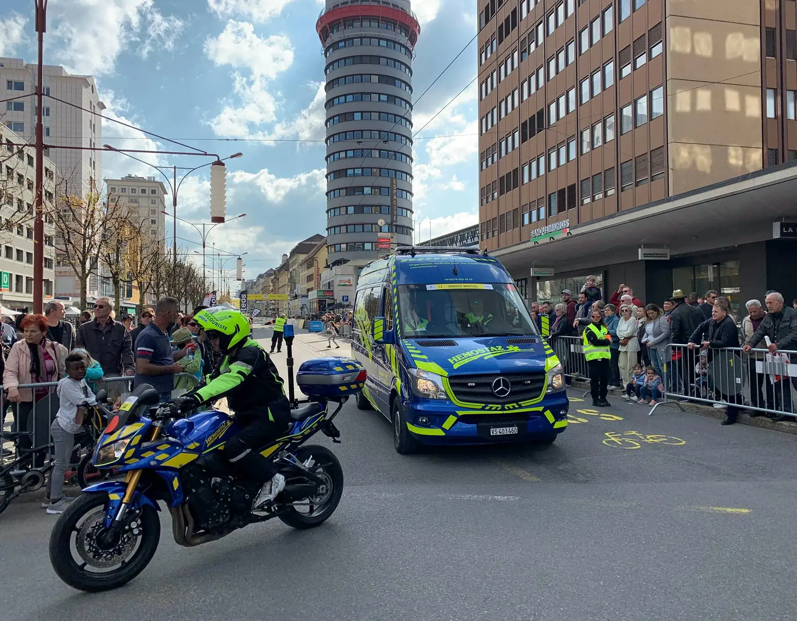
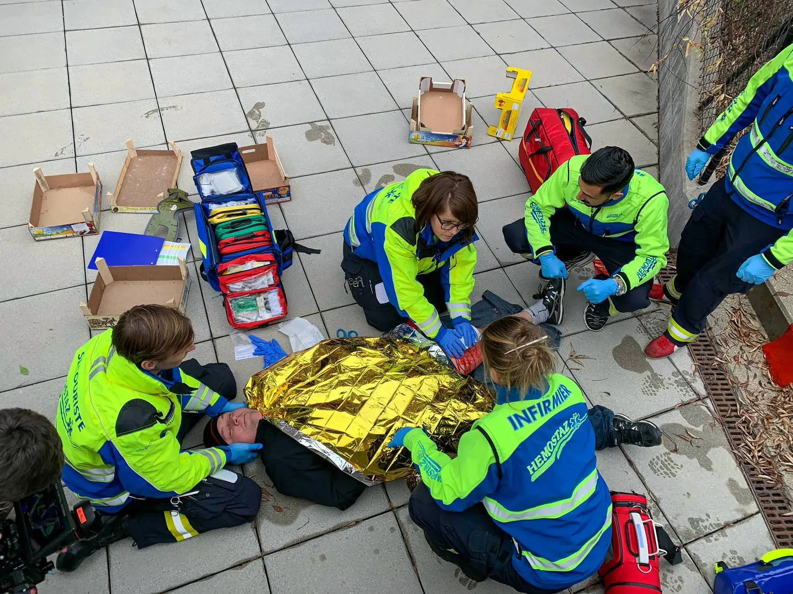
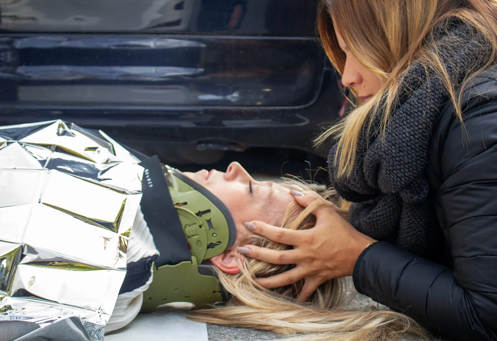
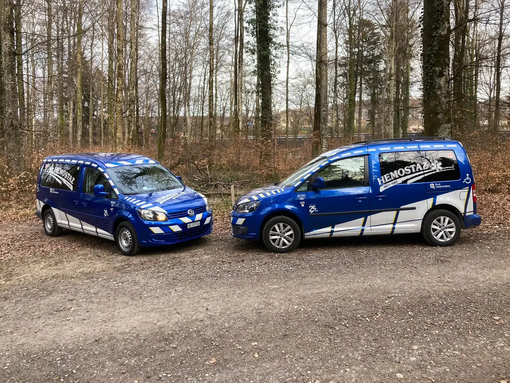
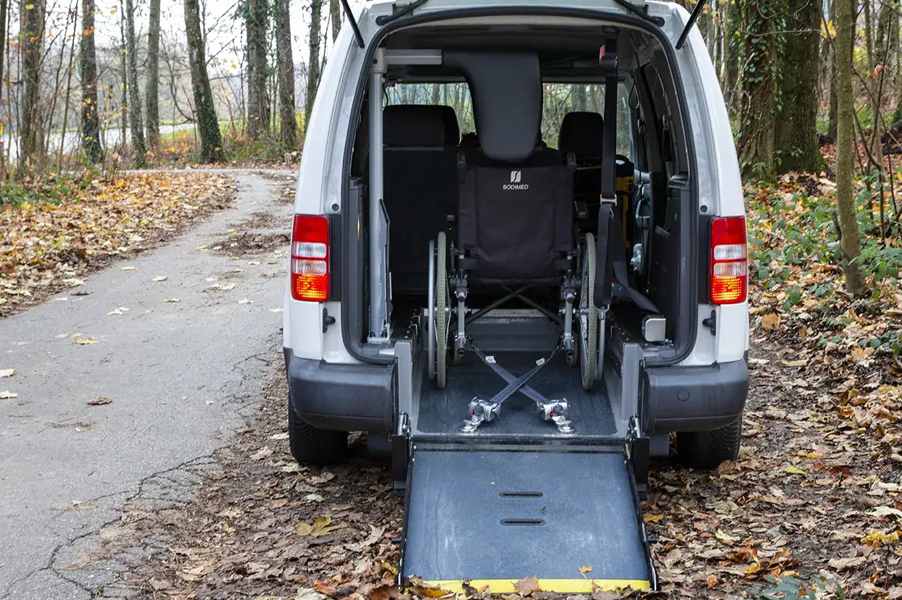
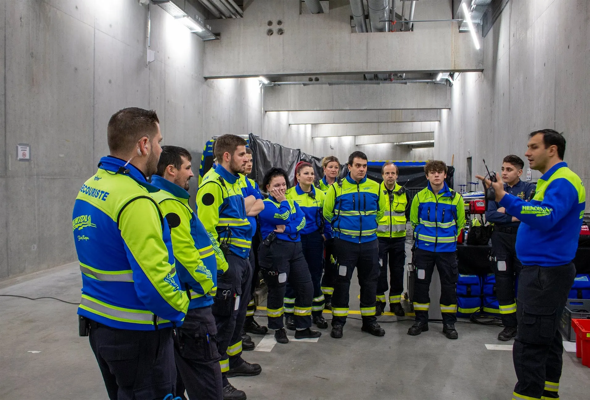

Pour les organisateurs d’événements
Un dispositif médico-sanitaire sur mesure
Reconnu par le BUSAMA depuis 2013Manifestations sportives, culturelles, musicales, privées, publiques ou d’entreprise : HEMOSTAZ conçoit et met en place le dispositif, selon les directives du secourisme en Suisse, de l’IAS et les exigences des communes et des cantons en matière de santé publique. Le personnel est formé et qualifié : secouristes, ambulanciers, infirmiers et médecins. Lorsqu’une ambulance est nécessaire, elle est fournie par notre partenaire STAR ambulances.
- Unité mobile de soins
- Une clinique mobile qui seconde le personnel de santé mobilisé : des blessures superficielles jusqu’à la réanimation.
- Contrôle antidopage
- Dispositif pour les courses cyclistes officielles, nationales et internationales.
- Fil rouge
- Raccompagner festivaliers et participants chez eux, avec leur véhicule ou les voitures VTP, pour que la soirée se termine sans franchir le « fil rouge ».
- Campagnes médicales
- Pour des partenaires pharmaceutiques : vaccination, dons du sang, consultations.

Pour les particuliers, les écoles et les entreprises
Des cours de premiers secours donnés par des professionnels de santé
Les instructeurs viennent du milieu de la santé : médecins, ambulanciers, infirmiers, secouristes professionnels. Les cours sont donnés avec Sanpool ou Espace Compétences, pour les privés comme pour les entreprises, dans toute la Suisse. HEMOSTAZ est membre de l’IAS et membre extraordinaire du Swiss Resuscitation Council.
- Permis de conduire
- Dès 14 ans, au minimum 2 jours (10 h). Attestation reconnue par l’OFROU, valable 6 ans.
- Permis bateau et mer
- Attestation de 10 h minimum, avec l’École de Voile d’Ouchy.
- Entreprises
- Formation selon le SECO, art. 36.
- BLS-AED, PBLS, IAS 1 à 3
- Réanimation, premiers secours pédiatriques, cours IAS, formation feu et cours sur mesure.
Un cours qui n’est pas dans la liste ? Écrivez-nous, HEMOSTAZ le prépare en lien avec votre activité.
formations@hemostaz.ch


Pour les établissements de santé et les personnes concernées
Transport professionnel de personnes à mobilité réduite
Reconnu par la LAMal et la LAAHEMOSTAZ est le trait d’union entre les personnes à mobilité réduite et les institutions de santé : EMS, hôpitaux, cliniques, cabinets médicaux, centres de réhabilitation. Les véhicules sont climatisés et chauffés, équipés de matériel de premiers secours, d’un défibrillateur et d’une bouteille d’oxygène, et répondent à la norme SN EN 1789. Le personnel est formé BLS-AED-SRC et IAS I, II et III. HEMOSTAZ est membre de l’ARTIS.
- Transport assis
- Pour qui ne peut pas conduire ni prendre les transports publics : soins, loisirs, autonomie au quotidien.
- Transport couché, médicalement stable
- Quand la position assise est inadaptée : douleurs, plâtre, hémiplégie, immobilisation.
- Rapatriement non médicalisé
- De l’étranger ou vers l’étranger.
- Échantillons médicaux
- Transport et collecte, véhicules équipés de frigos, personnel formé SDR-ADR.


D’un festival de montagne à six succursales
- 1987Le service d’ambulances de Leysin prend en charge les festivaliers de la première édition du Rock Festival de Leysin. L’idée d’HEMOSTAZ naît là.
- 1995La société est créée avec l’ouverture de l’Arena de Genève, salle pouvant accueillir jusqu’à 10 000 spectateurs. Peu après, elle assure le festival ATLANTIS dans les clubs lausannois, puis une présence médico-sanitaire au MAD Club.
- 2013Les patrouilles de secouristes dans la nuit lausannoise deviennent systématiques les week-ends et périodes de fête. Reconnaissance par le BUSAMA, rattaché au Service de la santé publique vaudois.
- 2020Création du service de transport professionnel de personnes à mobilité réduite.

65 secouristes, 9 médecins actifs, 10 infirmiers urgentistes, 4 ambulanciers.
Présente aujourd’hui dans plus de 500 manifestations par an, en Suisse romande et à l’étranger.
Reconnaissances et affiliations
- BUSAMABureau sanitaire des manifestations, Service de la santé publique vaudois.
- IASMembre de l’Interassociation de sauvetage.
- SRCMembre extraordinaire du Swiss Resuscitation Council.
- ARTISAssociation romande des transporteurs des institutions de santé.